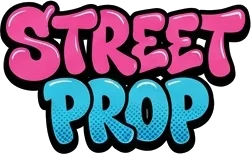
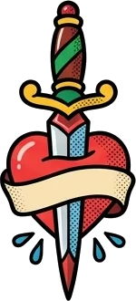
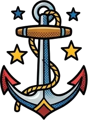

Cortar con «…» (una línea)
El título no cabe en la tarjeta: se corta con puntos suspensivos en vez de romper el diseño.
Qué problema resuelve
En una lista de canciones, productos o mensajes, los títulos tienen longitudes muy distintas. Si uno es largo, salta a dos o tres líneas y descuadra toda la rejilla. Con text-overflow: ellipsis el título se queda en una sola línea y lo que sobra se sustituye por …
Las tres piezas obligatorias
white-space: nowrap: prohíbe que el texto salte de línea. Sin esto, el texto simplemente baja y no hay nada que cortar.overflow: hidden: esconde lo que se sale de la caja.text-overflow: ellipsis: en vez de cortar en seco, pone «…» al final.
Y además la caja tiene que tener un ancho limitado (un width, un max-width o estar dentro de una columna de Grid o de Flex).
Lista de canciones con títulos cortados
Si falta cualquiera de las tres piezas, no funciona. El error más común es olvidar white-space: nowrap: el texto baja a otra línea y nunca llega a desbordarse.
Añade el texto completo en un atributo title (<li title="…">): al pasar el ratón, el navegador muestra el título entero.
Dentro de Flex: no olvides min-width: 0
En una fila de Flex, el hijo que contiene el texto se niega a encoger por debajo del ancho de su texto. Por eso el corte «no funciona». La solución es min-width: 0 en ese hijo.
Cortar tras varias líneas
El resumen de una noticia: tres líneas y «…». Lo que se llama line-clamp.

Line-clamp: «máximo N líneas»
text-overflow: ellipsis solo sirve para una línea. Para cortar un párrafo después de 2, 3 o 4 líneas se usa line-clamp. Aunque lleve el prefijo -webkit-, hoy funciona en Chrome, Edge, Safari y Firefox: es la forma estándar de hacerlo.
display: -webkit-box: un modo de caja antiguo que el corte necesita.-webkit-box-orient: vertical: las líneas van una debajo de otra.-webkit-line-clamp: 3: el número de líneas que se ven.overflow: hidden: esconde el resto. Los «…» los pone el navegador solo.
Laboratorio: mueve las líneas y el ancho
Tarjetas de noticias todas igual de altas
Tarjetas de blog, fichas de producto, comentarios: todas quedan de la misma altura aunque el texto sea más largo o más corto. El texto completo sigue en el HTML (los buscadores y los lectores de pantalla lo leen entero).
Títulos equilibrados
Adiós a la palabra huérfana que se queda sola en la última línea del titular.
text-wrap: balance y pretty
Cuando un titular ocupa dos líneas, el navegador llena la primera todo lo que puede y deja lo que sobra en la segunda. A veces queda una palabra sola, colgando. Un maquetador lo arreglaría a mano; text-wrap lo hace solo:
text-wrap: balance: reparte las palabras para que todas las líneas midan parecido. Para títulos y textos cortos (el navegador solo lo aplica hasta unas 6 líneas).text-wrap: pretty: para párrafos. No equilibra todo, solo evita que la última línea tenga una palabra suelta.
El mismo titular, sin y con balance
Párrafo sin palabra huérfana
Si un navegador antiguo no entiende text-wrap, simplemente lo ignora y el texto se ve como siempre. Puedes ponerlo en todos tus h1, h2 y h3.
Columnas de periódico
El texto fluye de una columna a la siguiente, como en un fanzine.
Multicolumna: el texto se reparte solo
Con Grid y Flex colocas cajas. Con las columnas de CSS colocas texto: un mismo párrafo empieza en la primera columna y, cuando la llena, continúa en la siguiente. Exactamente como un periódico.
| Propiedad | Qué hace | Ejemplo |
|---|---|---|
| column-count | número fijo de columnas | column-count: 3 |
| column-width | ancho ideal; el navegador decide cuántas caben (responsive sin media queries) | column-width: 220px |
| column-gap | hueco entre columnas | column-gap: 32px |
| column-rule | raya entre columnas (como un borde: grosor, estilo, color) | column-rule: 2px dashed #ff2d8a |
| column-span | un hijo ocupa todas las columnas (un titular) | column-span: all |
| break-inside | impide que una caja se parta entre dos columnas | break-inside: avoid |
Laboratorio: periódico punk
Columnas que se adaptan solas (column-width)
En lugar de decir «3 columnas», dices «columnas de unos 200px». En una pantalla ancha salen 3 o 4; en el móvil, 1. Sin una sola media query.
Tarjetas en columnas sin partirse (break-inside)
Con columnas puedes hacer el famoso muro de tarjetas de distintas alturas («masonry»). break-inside: avoid evita que una tarjeta empiece en una columna y acabe en otra.
Las columnas se leen de arriba abajo, no de izquierda a derecha. En un muro de tarjetas, la 2 queda debajo de la 1, no a su lado. Para textos largos en pantalla, no abuses: hacer scroll arriba y abajo para leer cansa. Úsalas en textos cortos o en pantallas anchas.
Texto que rodea formas
El texto abraza la silueta de la imagen en lugar de su caja rectangular.
float + shape-outside
Recuerda float: una imagen flotando a la izquierda deja que el texto la rodee. Pero el texto rodea su caja rectangular, aunque la imagen sea redonda o tenga fondo transparente. shape-outside le dice al texto la forma real que tiene que rodear.
| Valor | Forma |
|---|---|
| circle(50%) | un círculo del tamaño de la caja |
| ellipse(…) | una elipse |
| polygon(…) | un polígono con los puntos que tú digas (como clip-path) |
| url(imagen.png) | la silueta de las partes no transparentes de la imagen |
| shape-margin: 12px | aire entre la forma y el texto |
El texto abraza la silueta de la pizza
shape-outside: url() necesita que la página se abra con Live Server (o en internet): abriendo el archivo con doble clic, el navegador lo bloquea por seguridad y el texto vuelve a rodear la caja. Y la imagen tiene que tener fondo transparente (PNG o WebP).
Con una forma dibujada: circle()
Capitulares y primeras líneas
La letra gigante del principio de un cuento y la primera línea en mayúsculas.

Dos pseudoelementos de imprenta
Ya conoces ::before y ::after. Estos dos son de la misma familia, pero seleccionan un trozo del texto que no tiene etiqueta propia:
p::first-letter: la primera letra del párrafo. Confloat: lefty un tamaño enorme se convierte en una capitular, como en los libros antiguos.p::first-line: la primera línea tal como se ve en pantalla. Si cambias el ancho de la ventana, cambian las palabras que entran en ella, y el estilo se ajusta solo.
Capitular de fanzine
Primera línea en versalitas
No todas las propiedades valen dentro de estos pseudoelementos. En ::first-line solo funcionan las de texto y fuente (color, font, letter-spacing, text-transform, background…), no margin ni padding. En ::first-letter sí se pueden usar márgenes, rellenos, bordes y float.
Margin y padding a fondo
Los usas desde el primer día. Ahora, todos sus trucos.
Dentro o fuera
Imagina una caja de pizza dentro de la mochila de reparto: el padding es el cartón entre la pizza y el borde de la caja (forma parte de la caja y se pinta con su fondo); el margin es el espacio entre esa caja y las demás cosas de la mochila (fuera, siempre transparente).
Laboratorio: mueve el margin y el padding
El atajo de 1, 2, 3 o 4 valores
Los valores van como las agujas del reloj, empezando arriba: arriba → derecha → abajo → izquierda. Si faltan, se copian del lado de enfrente.
| Escribes | Significa |
|---|---|
| padding: 20px | 20 en los cuatro lados |
| padding: 10px 30px | 10 arriba y abajo · 30 derecha e izquierda |
| padding: 10px 30px 0 | 10 arriba · 30 derecha e izquierda · 0 abajo |
| padding: 10px 20px 30px 40px | arriba 10 · derecha 20 · abajo 30 · izquierda 40 |
| padding-inline: 20px | izquierda y derecha (los dos lados del texto) |
| padding-block: 20px | arriba y abajo |
Centrar una caja con margin: auto
Con un ancho fijo, margin-inline: auto reparte el espacio que sobra a partes iguales a izquierda y derecha: la caja queda centrada.
Margen negativo: montar una caja sobre otra
El colapso de márgenes
Entre dos cajas una encima de otra, los márgenes verticales no se suman: gana el más grande. Aquí hay 40px de hueco, no 70px.
El colapso no ocurre dentro de Flex ni de Grid. Por eso, para separar elementos, lo más cómodo es un contenedor con display: flex o grid y gap: sin sorpresas.
place-items: centrar en una línea
El atajo favorito para centrar cualquier cosa con Grid.
Tres atajos «place-»
| Atajo | Equivale a | Mueve… |
|---|---|---|
| place-items | align-items + justify-items | cada hijo dentro de su celda (lo pone el padre) |
| place-content | align-content + justify-content | la rejilla entera dentro del padre, cuando sobra espacio |
| place-self | align-self + justify-self | un solo hijo (lo pone el hijo) |
Con un valor (place-items: center) se aplica en los dos ejes. Con dos (place-items: end start), el primero es el vertical y el segundo el horizontal.
Laboratorio: elige un valor
Centrar en dos líneas
Un solo hijo a su aire: place-self
En Flexbox no existe justify-items: place-items: center solo centra en vertical. Para centrar del todo con Flex hay que escribir justify-content: center y align-items: center. Con Grid basta place-items: center.
pointer-events: el ratón atraviesa
Cuando una decoración tapa un botón y no deja hacer clic.
El problema de las pegatinas
Pones una pegatina, un brillo o un degradado encima de un botón (con position: absolute). Se ve genial… pero al hacer clic, el clic se lo lleva la pegatina y el botón no se entera. pointer-events: none le dice al navegador: «este elemento no existe para el ratón; el clic pasa a lo que haya debajo».
Pulsa los dos botones
Los dos tienen una pegatina encima. Solo en el segundo el clic llega al botón (cambia de color con :active y :hover).
Un degradado que difumina el final de una lista
Muy usado para indicar «hay más contenido»: el degradado tapa la lista, pero con pointer-events: none los enlaces de debajo siguen funcionando.
Poner pointer-events: none a un botón impide el clic con ratón, pero se puede seguir activando con el teclado (Tab + Intro). Para desactivar un botón de verdad, usa el atributo disabled en el HTML.
Suavizado de fuentes
Una línea que verás en muchas plantillas. Qué hace y, sobre todo, qué no hace.

-webkit-font-smoothing
Las pantallas dibujan las letras con píxeles y difuminan los bordes para que no se vean dentados (eso se llama antialiasing). En los Mac, el texto claro sobre fondo oscuro suele verse más grueso de la cuenta. Esta propiedad cambia la forma de suavizar:
| Valor | Efecto (solo en macOS) |
|---|---|
| auto | lo que decida el sistema (por defecto) |
| antialiased | letras más finas y nítidas; ideal para texto claro sobre fondo oscuro |
| subpixel-antialiased | el suavizado clásico, algo más grueso |
| -moz-osx-font-smoothing: grayscale | lo mismo que antialiased, pero para Firefox en Mac |
Texto claro sobre fondo oscuro
Si estás en Windows, verás los dos textos iguales: es normal, esta propiedad no hace nada fuera de macOS. Por eso no es grave olvidarla, pero tampoco molesta ponerla. Muchas webs la escriben una sola vez en el body.
Cómo se suele escribir: una vez en el body
Perspective y backface-visibility
El 3D de verdad: desde dónde miras y qué pasa con la espalda de una tarjeta.
Sin perspectiva, el 3D se ve plano
Con transform: rotateY(45deg) la tarjeta gira, pero sin perspectiva solo parece más estrecha. perspective le dice al navegador a qué distancia está tu ojo: cuanto menor el número, más cerca estás y más exagerado el efecto (como mirar algo con la nariz pegada).
perspective: 600pxen el padre: todos los hijos comparten el mismo punto de vista.transform: perspective(600px) rotateY(45deg)en el propio elemento: cada uno tiene su propio punto de vista.perspective-origin: desde dónde miras (arriba, abajo, a un lado…). Por defecto, desde el centro.
Laboratorio: acércate y aléjate
Padre o hijo: no es lo mismo
Arriba, la perspectiva está en el padre: las tres cartas se ven desde un mismo punto. Abajo, cada una lleva la suya: todas se ven igual.
backface-visibility: la espalda de la tarjeta
Cuando un elemento gira más de 90°, enseña la espalda (el contenido al revés, como en un espejo). Con backface-visibility: hidden esa espalda no se ve. Es la base de las tarjetas que se dan la vuelta: dos caras, una encima de otra, y la de atrás ya girada 180°.
Tarjeta con dos caras (pasa el ratón)
Borra backface-visibility: hidden del código y verás que, al girar, «PIZZA» se ve al revés a través de «PUNK».
Chuleta
Todo en una tabla, para copiar rápido.
| Código | Qué hace | Recuerda |
|---|---|---|
| Textos de editor | ||
| text-overflow: ellipsis | «…» en una línea | + white-space: nowrap + overflow: hidden + ancho |
| -webkit-line-clamp: 3 | «…» tras 3 líneas | + display: -webkit-box + -webkit-box-orient: vertical + overflow: hidden |
| text-wrap: balance | títulos con líneas parecidas | solo para textos cortos |
| text-wrap: pretty | párrafos sin palabra huérfana | si no lo entiende, lo ignora |
| column-count · column-width | texto en columnas | se lee de arriba abajo |
| column-gap · column-rule | hueco y raya entre columnas | column-rule se escribe como un border |
| column-span: all | titular a todo lo ancho | en un hijo |
| break-inside: avoid | la caja no se parte | tarjetas en columnas |
| shape-outside | el texto rodea una forma | solo con float · url() necesita Live Server |
| ::first-letter | la primera letra (capitular) | float: left + font-size grande |
| ::first-line | la primera línea visible | solo propiedades de texto |
| Macedonia | ||
| padding · margin | aire dentro · aire fuera | arriba, derecha, abajo, izquierda |
| margin-inline: auto | centrar una caja | necesita un width |
| margen negativo | montar una caja sobre otra | los verticales colapsan fuera de Flex y Grid |
| place-items: center | centrar en Grid | en Flex solo centra en vertical |
| place-self | colocar un solo hijo | lo pone el hijo |
| pointer-events: none | el ratón atraviesa | no sustituye a disabled |
| -webkit-font-smoothing | suavizado de letras | solo macOS |
| perspective | distancia del ojo (en el padre) | menos píxeles = más 3D |
| backface-visibility: hidden | esconde la espalda al girar | tarjetas de dos caras |
Test final
Todas las preguntas juntas. Cada respuesta te explica el porqué.